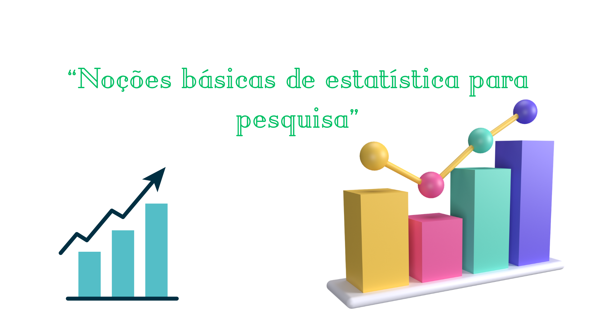

Pergunta aqui...
Feedback da resposta
Pequena descrição do conteúdo.

Faça o quiz e descubra quanto aprendeu sobre o conteúdo.
Clique e saiba mais sobre os conteúdos:
pode-se compreender o texto verbal, oral e escrito, como uma prática social que utiliza estruturas verbais, organizadas e caracterizadas por suas estruturas linguísticas e sua função social, com vistas a cumprir um papel pessoal ou coletivo na vida humana. O mesmo se aplica aos textos não verbais, também compreendidos como uma ação social, diferenciando-se somente em função das estruturas e códigos utilizados.
Texto genérico...
Texto genérico...
Texto genérico...
Texto genérico...
Texto genérico...
Texto genérico...
Texto genérico...
Texto genérico...
Você concluiu o quiz.
Você acertou